Mit Hilfe der Projektbearbeitung, welche über den Menüpunkt…
1 WinLine FAKT
1 Erfassen
1 Projektverwaltung
1 Projektbearbeitung
… aufgerufen wird, besteht die Möglichkeit auf Grundlage eines Projekts Anzahlungsrechnungen (auch Abschlagrechnungen oder Teilrechnungen genannt) und Schlussrechnungen zu schreiben und die dazugehörigen Buchungen für die WinLine FIBU zu erstellen.
Hinweis
Die Projektnummer ist der übergeordnete Begriff, aufgrund dessen alle zusammengehörende Transaktionen (Belege, Buchungen (inkl. Zahlungen), Projektinfo, KORE Info, Vertreter Info) zusammengeführt werden.
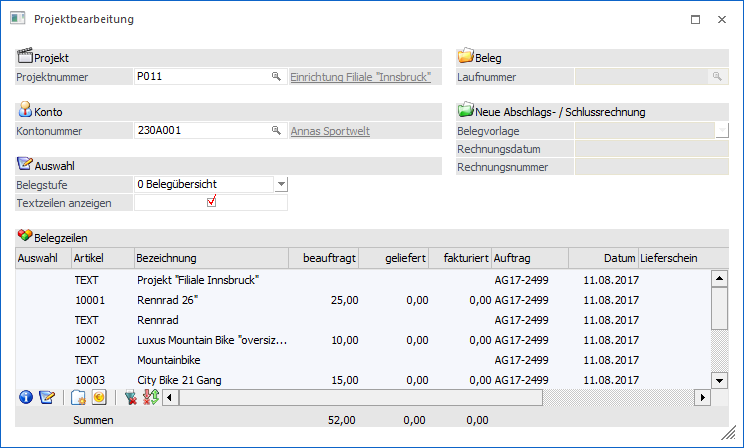
Folgende Eingabefelder und Einstellungen stehen zur Verfügung:
Projekt
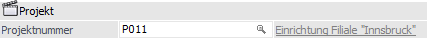
Ø Projektnummer
An dieser Stelle muss zunächst eine Projektnummer ausgewählt werden. Es können nur vorhandene (d.h. im Projektstamm gespeicherte) Projekte verwendet werden.
Konto
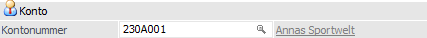
Ø Kontonummer
Falls im Projektstamm eine Kontonummer vorhanden ist, so wird diese automatisch vorgeschlagen. Gibt es keine Kontonummer im Projektstamm, so wird die letzte Kontonummer vorgeschlagen, die mit dem Projekt bearbeitet wurde. Sie kann aber manuell bzw. über den Matchcode übersteuert werden.
Auswahl
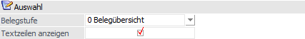
Ø Belegstufe
Mit Hilfe der Auswahl "Belegstufe" wird definiert, was in Projektbearbeitung getan werden soll. Folgende Möglichkeiten stehen zur Verfügung:
ü 0 - Belegübersicht
In der
Tabelle "Belegzeilen" werden alle Artikel der einzelnen Belege aufgelistet.
Dabei wird für jeden Artikel die Menge bestellt, die Menge geliefert und die
Menge fakturiert angezeigt. Daneben wird die Belegnummer angezeigt. Falls für
einen Artikel mehrere Belege (z.B. Teillieferscheine oder Teilrechnungen)
vorhanden sind, wird die Belegstufe ausgewiesen.
ü 1 - Angebot bis 4 -
Faktura
Über den Matchcode in dem Eingabefeld "Laufnummer" werden all jene
Belege angezeigt, die zu diesem Projekt, Konto und der ausgewählten Belegstufe
gehören. Durch einen Doppelklick auf einen dieser Beleg wird er im Belegerfassen
geöffnet und der Beleg kann editiert werden.
ü 5 - Abschlagsrechnung
(Mengen)
Es werden wie bei der Belegansicht die Mengen aller Artikel in einer
Tabelle "Belegzeilen" angezeigt. Zusätzlich gibt es eine Spalte "zu
fakturieren", in welcher die zu fakturierende Menge (unabhängig von bereits
gelieferten Mengen) eingegeben werden kann.
Beim Druck des "Ok"-Buttons wird
ein Beleg erzeugt, der alle Artikel mit zu fakturierender Menge <> 0
enthält und als Faktura gedruckt wird. Dabei werden nur die Buchungen erzeugt,
die in der Stufe "Faktura" geschrieben werden (Umsatzbuchungen, Statistik,
FIBU-Übergabe), aber keine der Stufe "Lieferschein", also auch keine
Lagerbuchungen.
Hinweis 1
Wurde für das Projekt bereits eine Rechnung des Typs "5 - Abschlagsrechnung (Mengen)" erstellt, dann können in der Folge nur noch Abschlagsrechnungen dieses Typs erfasst werden.
Hinweis 2
Bei Anwahl des "Ok"-Buttons
erfolgt zunächst eine Prüfung, ob mehr fakturiert werden soll, als bestellt
wurde. Ist dies der Fall erfolgt eine Meldung:
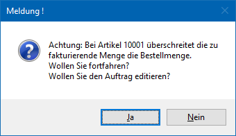
Hinweis 3 (FIBU-Übergabe)
Die Buchung, welche beim dem Druck der Abschlagsrechnung erstellt wird, entspricht der Buchung wie sie bei einer "normalen" Faktura erzeugt wird. D.h. es wird das Personenkonto und das Erlöskonto aus dem Artikel angesprochen.
ü 6 - Abschlagsrechnung
(Werte)
Es werden alle Artikel der einzelnen Belege in der Tabelle
aufgelistet. Dabei wird für jeden Artikel der Wert bestellt, der Wert geliefert
und der Wert fakturiert angezeigt.
Die Ausweisung des zu zahlenden Betrags
erfolgt mit Hilfe eines lagerneutralen Artikels, welcher innerhalb der Tabelle
(in einer neuen Zeile) erfasst werden. In der Spalte "Bezeichnung" des
Abschlagsartikels kann per Matchcode (F9) ein Zusatztext für die
Abschlagsrechnung erfasst werden, wobei das Notizfeld standardmäßig mit der
Nummer der Abschlagsrechnung, dem Rechnungsdatum (Parameter #DATE) und der
Rechnungsnummer (Parameter #NR) gefüllt wird.
Die Angabe des Abschlagsbetrags
erfolgt in der Spalte "zu fakturieren".
Beim Druck des "Ok"-Buttons wird dann
ein Beleg erzeugt, der alle neuen Abschlagsartikel mit zu fakturierendem Wert
<> 0 enthält und als Faktura gedruckt. Dabei werden nur die Buchungen
erzeugt, die in der Stufe "Faktura" geschrieben werden (Umsatzbuchungen,
Statistik, FIBU-Übergabe), aber keine der Stufe "Lieferschein", also auch keine
Lagerbuchungen.
Hinweis
Wurde für das
Projekt bereits eine Rechnung des Typs "6 - Abschlagsrechnung (Werte)" erstellt,
dann können in der Folge nur noch Abschlagsrechnungen dieses Typs erfasst
werden.
Für die Vertreterauswertung ist zu beachten, dass bei einer
Abschlagsrechnung (Werte) die Vertreterübernahme mit Generieren der
Schlussrechnung erfolgt.
Hinweis (FIBU-Übergabe)
Die Buchung, welche beim dem Druck der Abschlagsrechnung erstellt wird, entspricht der Buchung wie sie bei einer "normalen" Faktura erzeugt wird. D.h. es wird das Personenkonto und das Erlöskonto aus dem hinzugefügten Abschlagsartikels angesprochen.
ü 7 - Schlussrechnung
Es werden
wie in der Belegübersicht alle Artikel aller Belege in der Tabelle aufgelistet.
Je nachdem, ob bereits eine Rechnung des Typs "5 - Abschlagsrechnung (Menge)"
oder "6 - Abschlagsrechnung (Werte)" erfasst wurde, werden die noch offenen zu
fakturierenden Mengen bzw. Werte angezeigt.
Beim Druck der
Schlussrechnung wird für die noch zu liefernden Mengen ein Sammellieferschein
und für die noch zu fakturierenden Werte eine Schlussrechnung erstellt.
Zusätzlich erhalten alle offenen Belege (z.B. der Auftrag) den Status
"erledigt". Hierüber wird auch eine entsprechende Meldung am Bildschirm
ausgegeben, welche durch Halten der STRG-Taste unterdrückt werden
kann.
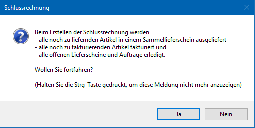
Hinweis 1
Im Artikelstamm (Register "Preise" - Unterregister "Konten") existiert für diesen Fall beim Abschlagsartikel das Eingabefeld "Schlussrechnungskonto". Wenn dort ein Konto hinterlegt wurde, dann wird bei der Schlussrechnungserstellung der "Abschlagsartikel" nicht mit dem normalen Erlöskonto versehen, sondern mit dem "Schlussrechnungskonto". Dieses ist notwendig, da in der Zwischenzeit auf WinLine FIBU-Seite eine Umbuchung stattgefunden hat.
Hinweis 2
Bei zuvor gestellten Rechnungen des Typs " 5 - Abschlagsrechnung (Mengen)" wird bei Anwahl des Buttons "Ok" geprüft, ob bereits mehr fakturiert als beauftragt wurde und ggfs. die Rechnungserstellung abgebrochen (nähere Information siehe Typ "5 - Abschlagsrechnung (Mengen)" - Hinweis 2).
Hinweis (FIBU-Übergabe)
Bei zuvor gestellten Rechnungen des Typs "5 - Abschlagsrechnung (Mengen)" werden die Artikel bzw. Mengen, für welche noch keine Abschlagsrechnung erstellt wurde, fakturiert. Entsprechend wird die FIBU-Buchung über die Erlöskonten der Artikel erstellt.
Bei zuvor erstellten Rechnungen des Typs "6 - Abschlagsrechnung (Werte)" wird über die gesamten Artikel und Mengen des Auftrags die FIBU-Buchung erstellt. Dabei wird eine Splitzeile erstellt, da die Abschlagsartikel mit negativem Betrag wieder ausgebucht werden. Dieses erfolgt jedoch nicht über das Erlöskonto des Abschlagsartikels, sondern über das sogenannte "Schlussrechnungskonto" des Abschlagsartikels.
Ø Textzeilen anzeigen
Wenn diese Option aktiviert wird, dann werden alle im Auftrag erfassten Texte (Positionstyp "3 - Text") in der Tabelle angezeigt.
Hinweis
Beim Schreiben einer Abschlagsrechnung bzw. der Schlussrechnung kann pro Textzeile entschieden werden, ob der Text in der Rechnung gedruckt werden soll oder nicht. Hierzu steht in der Tabelle die Spalte "Auswahl" zur Verfügung.
Beleg
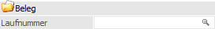
Ø Laufnummer
Mit Hilfe des Eingabefelds "Laufnummer" kann ein zu dem Projekt erfasster Beleg in der Belegerfassung geladen oder ein neuer Beleg erstellt werden.
Hinweis
Dieses Feld steht nur bei den Belegstufen "1 - Angebot" bis "4 - Faktura" zur Verfügung (siehe Feld "Belegstufe").
Neue Abschlagsrechnung (Wert)
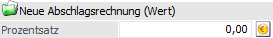
Ø Prozentsatz
An dieser Stelle kann die Höhe des Abschlagsprozentsatzes hinterlegt werden. Über den Button "Prozentberechnung" wird der Abschlagsbetrag automatisch errechnet und an die zuvor in der Tabelle erfasste Abschlagsposition übergeben. Handelt es sich um die erste Abschlagsrechnung, so muss zunächst der Abschlagsartikel in der Tabelle erfasst werden.
Hinweis
Dieses Feld steht nur bei der Belegstufe "6 - Abschlagsrechnung (Wert)" zur Verfügung (siehe Feld "Belegstufe").
Neue Abschlags- / Schlussrechnung
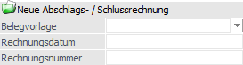
Ø Belegvorlage
In dem Feld "Belegvorlage" kann eine angelegte Belegvorlage (WinLine FAKT - Stammdaten - Belegstammdaten - Belegvorlage) hinterlegt werden, welche zur Erstellung der Abschlags- bzw. Schlussrechnung verwendet werden soll.
Hinweis
Die Belegvorlage dienen dazu, in einem Belege Werte aus dem Bereich "Bestelldatei Kopf" sowie aus "Bestelldatei Mitte" vorzudefinieren. D.h. die Werte nicht aus dem Basisbeleg zu verwenden, sondern jene, die in der Vorlage angegeben werden.
Beispiele
Im Bereich "Bestelldatei Kopf" Änderung der Belegart, des Listbilds , des OP-Kennzeichens…
Im Bereich "Bestelldatei Mitte" Änderung des Kostenträger, der Kostenstelle, des Erlöskontos…
Ø Rechnungsdatum
An dieser Stelle kann ein vom Tagesdatum abweichendes Datum hinterlegt werden, welches für die Erstellung des Beleges verwendet wird.
Ø Rechnungsnummer
In dem Feld "Rechnungsnummer" kann eine Rechnungsnummer hinterlegt werden, welche für die Erstellung des Beleges verwendet werden soll.
Hinweis
Durch die Hinterlegung einer Rechnungsnummer wird in die automatische Belegnummernvergabe aufgrund der verwendeten Belegart eingegriffen.
Tabelle "Belegzeilen"
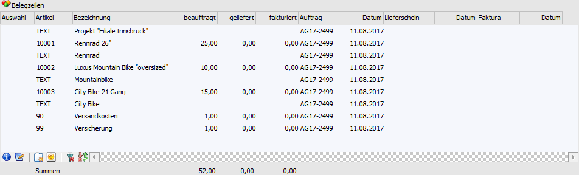
In der Tabelle werden bei den Belegstufen "0 - Belegübersicht", "5 - Abschlagsrechnung (Mengen)", "6 - Abschlagsrechnung (Werte)" und "7 - Schlussrechnung" die Artikel und ggfs. Textzeilen (bei Aktivierter Option "Textzeilen anzeigen") der Belege des Projekts angezeigt. Sobald eine Abschlagsrechnung des Typs "6 - Abschlagsrechnung (Werte)" geschrieben wird bzw. bereits erfasst wurde, werden anstatt der Mengen die Werte in der Tabelle ausgewiesen.
Hinweis
Sind in der Tabelle bzw. in darin verwendeten Belegen Hauptartikel und zugehörige Ausprägungszeilen enthalten, so ist eine Sortierung der Zeilen (Anwählen der Tabellenüberschriften) nicht möglich.
Tabellenbuttons
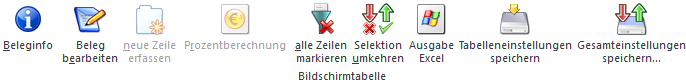
Ø Beleginfo
Beim Drücken dieses Buttons wird je nach Fokussetzung der entsprechende Beleg angezeigt. Falls für eine Zeile mehrere Belege vorhanden sind, so kann der gewünschte Beleg aus dem Matchcode ausgewählt werden.
Ø Beleg bearbeiten
Nach Auswahl eines Artikels und der entsprechenden Spalte (Auftrag, Lieferschein, Faktura) kann über den Button "Beleg bearbeiten" direkt in die Belegerfassung gewechselt werden, um dort z.B. Mengen oder Preise anzupassen.
Ø neue Zeile erfassen
Bei Schlussrechnungen, für die bereits wertmäßige Abschlagsrechnungen existieren, können automatisch keine neuen Zeilen erfasst werden. Über den Button "neue Zeile erfassen" kann dieses übersteuert und Zeilen erfasst werden.
Ø Prozentberechnung
Wenn eine Abschlagsrechnung vom Typ "6 - Abschlagsrechnung (Werte)" erstellt wird, kann durch Anwahl dieses Buttons der Abschlagsbetrag für die erfasste Abschlagsposition automatisch errechnet werden.
Hinweis
Damit die Berechnung stattfinden kann, muss in dem Feld "Prozentsatz" ein Wert hinterlegt sein.
Ø alle Zeilen selektieren
Durch Anklicken dieses Buttons werden alle Textzeilen selektiert.
Ø Selektion umkehren
Durch Anklicken dieses Buttons werden alle vorgenommenen Selektionen in das Gegenteil umgewandelt - selektierte Textzeilen werden deselektiert, deselektierte Textzeilen werden selektiert.
Ø Ausgabe Excel
Durch Anwahl des Buttons "Ausgabe Excel" wird der Inhalt der Tabelle nach Microsoft Excel übergeben.
Ø Tabelleneinstellungen speichern
Die Spalten einer Tabelle können grundsätzlich an beliebige Positionen verschoben, bzw. in der Breite entsprechend angepasst werden. Durch Anwahl des Buttons "Tabelleneinstellungen speichern" werden die Einstellungen benutzerspezifisch gespeichert und bei dem nächsten Aufruf des Programmpunktes wieder vorgeschlagen.
Ø Gesamteinstellungen speichern
Im Gegensatz zu "Tabelleneinstellungen speichern" können mit "Gesamteinstellungen speichern" mehrere Tabellenaufbauten gespeichert und nach Wunsch geladen werden. Zusätzlich werden Sonderfunktionen der Tabelle (z.B. "Spalte gruppieren") ebenfalls bei der Speicherung bedacht.
Buttons
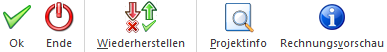
Ø Ok
Durch Anklicken des Buttons "Ok" oder der Taste F5 werden die eingegeben Werte gespeichert bzw. die Rechnung gedruckt.
Ø Ende
Durch Drücken des "Ende"-Buttons bzw. der Taste ESC wird das Fenster geschlossen. Hierbei werden alle nicht gespeicherten Eingaben verworfen und keine Rechnung erstellt.
Ø Wiederherstellen
Alle getätigten Eingaben werden bei der Anwahl des Buttons "Wiederherstellen" verworfen und der Ursprungszustand (Zustand bei der letzten Speicherung) wieder hergestellt.
Ø Projektinfo
Mittels "Projektinfo"-Button kann die detaillierte Projektauswertung des aktuellen Projektes aufgerufen werden.
Ø Rechnungsvorschau
Über den "Rechnungsvorschau"-Button kann die zu erzeugende Rechnungen und der Lieferschein (bei Belegstufe "7 - Schlussrechnung") am Bildschirm angezeigt werden.
Hinweis
Wurde aus der Auswahlliste eine Belegvorlage gewählt, so wird diese bei der Erstellung der Vorschau berücksichtigt.
Hinweis zu den Rechnungsformularen
Für Rechnungen, welche über den Bereich "Projektbearbeitung" erzeugt werden, stehen zusätzliche Flags im Formular Editor zur Verfügung. Über diese können die Besonderheiten von Projektrechnungen abgebildet werden.
Für den Kopfbereich steht folgendes Flag zusätzlich zur Verfügung:
ü F = Abschlagsrechnung
Über die Kombination mit dem Flag "A" können im Rechnungskopf weitere Informationen bereitgestellt werden.
Beispiel
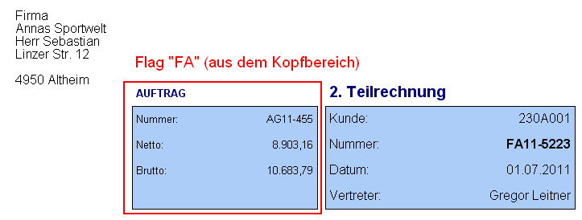
Für den Mittelteil stehen folgende Flags zusätzlich zur Verfügung.
ü F = Abschlagsrechnung
ü J = Abschlagsrechnung Menge
ü I = Zahlungen
ü A = Kopf
ü B = Mitte
ü C = Summe
Die Flags "F", "J" und "I" werden dabei immer in Kombination mit "A", "B" oder "C" im Mittelteil verwendet.
Beispiel für Belegstufe "5 - Abschlagsrechnung (Menge)"
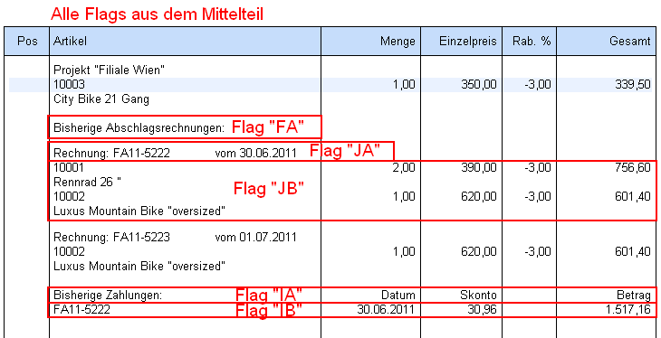
Beispiel für Belegstufe "6 - Abschlagsrechnung (Werte)"
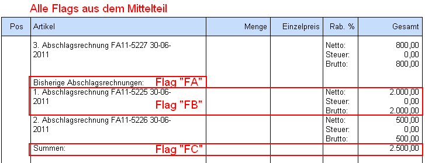
Für den Fussbereich steht ebenfalls das Flag aus dem Kopfbereich zur Verfügung:
ü F = Abschlagsrechnung
Über die Kombination mit dem Flag "C" kann im Rechnungsfuss der Gesamtnetto-, -steuer- und -bruttobetrag aller Teilrechnungen angedruckt werden (Var. 0/838 bis 0/840). Dieses gilt nur Beträge, welche über den Typ "6 - Abschlagsrechnung (Wert)" fakturiert wurden.
Beispiel
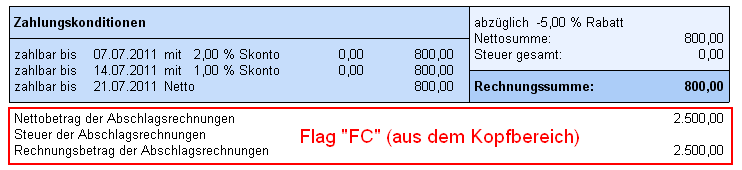